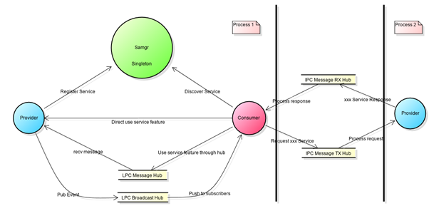
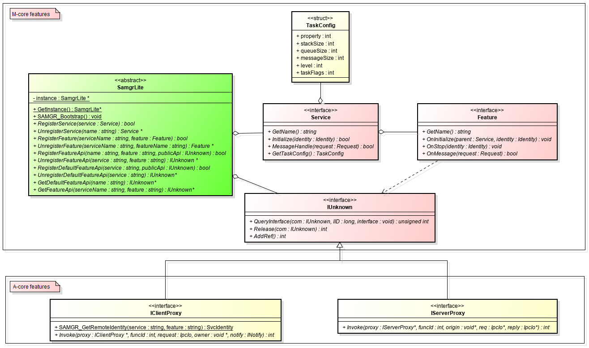

Service Framework Subsystem¶
Introduction¶
Due to limited platform resources, a unified service framework is provided to harmonize differences of hardware architectures (for example, RISC-V, Cortex-M, and Cortex-A), resources, and running modes. Two types of hardware platforms (M- and A-core) are defined.
M-core: Hardware platforms with Cortex-M or equivalent processing capabilities. The system memory is generally less than 512 KB. There is only a lightweight file system that can be used in limited scenarios, or no file system at all. M-core platforms comply with the Cortex Microcontroller Software Interface Standard (CMSIS).
A-core: Hardware platforms with Cortex-A or equivalent processing capabilities. The system memory is greater than 512 KB. There is a comprehensive file system for storing a large amount of data. A-core platforms comply with the Portable Operating System Interface (POSIX) specifications.
This service-oriented service framework enables you to develop services, features, and external APIs, and implement multi-service process sharing and service invoking for inter-process communication (IPC).
M core provides services, features, external APIs, and multi-service process sharing development.
In addition to the capabilities provided by M-core, A-core provides capabilities such as IPC service invoking, permission control for IPC service invoking, and IPC service API development.
Service-oriented architecture

Provider: a service provider that provides capabilities (external APIs) for the system
Consumer: a service consumer that invokes the features (external APIs) provided by the service
Samgr: an agency that manages capabilities provided by providers and helps consumers discover providers’ capabilities
Main objects of the service framework:

SamgrLite: provides service registration and discovery.
Service: implements lifecycle APIs of the service during service development.
Feature: implements lifecycle APIs of the feature during feature development.
IUnknown: implements external APIs for services or features based on IUnknown.
IClientProxy: implements the consumer’s proxy to send messages during IPC invoking.
IServerProxy: implements the provider’s proxy during IPC invoking, which needs to be implemented by developers.
Directory¶
Table 1 Structure of the source code directory of the service framework subsystem
Directory | Description |
|---|---|
interfaces/kits/samgr_lite/samgr | External APIs of the M- and A-core service frameworks |
interfaces/kits/samgr_lite/registry | External APIs for service invocation between A-core processes |
interfaces/kits/samgr_lite/communication/broadcast | External APIs of the event broadcast service within M- and A-core processes |
services/samgr_lite/samgr/adapter | POSIX and CMSIS interface adaptation layer, which is used to harmonize the differences between the APIs of M- and A-core |
services/samgr_lite/samgr/registry | Stub functions for M-core service registration and discovery |
services/samgr_lite/samgr/source | Basic code for the M- and A-core service frameworks |
services/samgr_lite/samgr_client | Registration and discovery for service invocation between A-core processes |
services/samgr_lite/samgr_server | IPC address management and access control for service invocation between A-core processes |
services/samgr_lite/samgr_endpoint | Packet RX/TX management for A-core IPC |
services/samgr_lite/communication/broadcast | Event broadcast service for M- and A-core processes |
Restrictions¶
The service framework is developed using the C programming language.
Services in the same process use IUnknown for invoking. Messages are passed to the service through IUnknown.
The service name and feature name must be constant character strings and the length must be less than 16 bytes.
More-core depends on the Bootstrap service and calls the OHOS_SystemInit() function in the system startup function.
A-core depends on the Samgr library and calls the SAMGR_Bootstrap() function in the main function.
Developing a Service¶
Inherit and redefine a service.
typedef struct ExampleService { INHERIT_SERVICE; INHERIT_IUNKNOWNENTRY(DefaultFeatureApi); Identity identity; } ExampleService;
Implement the lifecycle function of the service.
static const char *GetName(Service *service) { return EXAMPLE_SERVICE; } static BOOL Initialize(Service *service, Identity identity) { ExampleService *example = (ExampleService *)service; // Save the unique ID of the service, which is used when IUnknown is used to send messages to the service. example->identity = identity; return TRUE; } static BOOL MessageHandle(Service *service, Request *msg) { ExampleService *example = (ExampleService *)service; switch (msg->msgId) { case MSG_SYNC: // Process the service. break; default:break; } return FALSE; } static TaskConfig GetTaskConfig(Service *service) { TaskConfig config = {LEVEL_HIGH, PRI_BELOW_NORMAL, 0x800, 20, SHARED_TASK}; return config; }
Create a service object.
static ExampleService g_example = { .GetName = GetName, .Initialize = Initialize, .MessageHandle = MessageHandle, .GetTaskConfig = GetTaskConfig, SERVER_IPROXY_IMPL_BEGIN, .Invoke = NULL, .SyncCall = SyncCall, IPROXY_END, };
Register the service and API with Samgr.
static void Init(void) { SAMGR_GetInstance()->RegisterService((Service *)&g_example); SAMGR_GetInstance()->RegisterDefaultFeatureApi(EXAMPLE_SERVICE, GET_IUNKNOWN(g_example)); }
Define the initializer of the service.
SYSEX_SERVICE_INIT(Init);
Developing a Feature of a Service¶
Inherit and redefine a feature.
typedef struct DemoFeature { INHERIT_FEATURE; INHERIT_IUNKNOWNENTRY(DemoApi); Identity identity; Service *parent; } DemoFeature;
Implement the lifecycle function of the feature.
static const char *FEATURE_GetName(Feature *feature) { return EXAMPLE_FEATURE; } static void FEATURE_OnInitialize(Feature *feature, Service *parent, Identity identity) { DemoFeature *demoFeature = (DemoFeature *)feature; demoFeature->identity = identity; demoFeature->parent = parent; } static void FEATURE_OnStop(Feature *feature, Identity identity) { g_example.identity.queueId = NULL; g_example.identity.featureId = -1; g_example.identity.serviceId = -1; } static BOOL FEATURE_OnMessage(Feature *feature, Request *request) { if (request->msgId == MSG_PROC) { Response response = {.data = "Yes, you did!", .len = 0}; SAMGR_SendResponse(request, &response); return TRUE; } else { if (request->msgId == MSG_TIME_PROC) { LOS_Msleep(WAIT_FEATURE_PROC * 10); if (request->msgValue) { SAMGR_PrintServices(); } else { SAMGR_PrintOperations(); } AsyncTimeCall(GET_IUNKNOWN(g_example)); return FALSE; } } return FALSE; }
Create a feature object.
static DemoFeature g_example = { .GetName = FEATURE_GetName, .OnInitialize = FEATURE_OnInitialize, .OnStop = FEATURE_OnStop, .OnMessage = FEATURE_OnMessage, DEFAULT_IUNKNOWN_ENTRY_BEGIN, .AsyncCall = AsyncCall, .AsyncTimeCall = AsyncTimeCall, .SyncCall = SyncCall, .AsyncCallBack = AsyncCallBack, DEFAULT_IUNKNOWN_ENTRY_END, .identity = {-1, -1, NULL}, };
Register the feature and API with Samgr.
static void Init(void){ SAMGR_GetInstance()->RegisterFeature(EXAMPLE_SERVICE, (Feature *)&g_example); SAMGR_GetInstance()->RegisterFeatureApi(EXAMPLE_SERVICE, EXAMPLE_FEATURE, GET_IUNKNOWN(g_example)); }
Define the initializer of the feature.
SYSEX_FEATURE_INIT(Init);
Developing an External API for Intra-process Communication¶
Define the IUnknown API.
typedef struct DemoApi { INHERIT_IUNKNOWN; BOOL (*AsyncCall)(IUnknown *iUnknown, const char *buff); BOOL (*AsyncTimeCall)(IUnknown *iUnknown); BOOL (*SyncCall)(IUnknown *iUnknown, struct Payload *payload); BOOL (*AsyncCallBack)(IUnknown *iUnknown, const char *buff, Handler handler); } DemoApi;
Define the reference object of IUnknown.
typedef struct DemoRefApi { INHERIT_IUNKNOWNENTRY(DemoApi); } DemoRefApi;
Initialize the object of IUnknown.
static DemoRefApi api = { DEFAULT_IUNKNOWN_ENTRY_BEGIN, .AsyncCall = AsyncCall, .AsyncTimeCall = AsyncTimeCall, .SyncCall = SyncCall, .AsyncCallBack = AsyncCallBack, DEFAULT_IUNKNOWN_ENTRY_END, };
Register the feature API.
SAMGR_GetInstance()->RegisterFeatureApi(EXAMPLE_SERVICE, EXAMPLE_FEATURE, GET_IUNKNOWN(api));
Invoking a Service in the Same Process¶
Obtain the external API of the service.
DemoApi *demoApi = NULL; IUnknown *iUnknown = SAMGR_GetInstance()->GetFeatureApi(EXAMPLE_SERVICE, EXAMPLE_FEATURE); if (iUnknown == NULL) { return NULL; } int result = iUnknown->QueryInterface(iUnknown, DEFAULT_VERSION, (void **)&demoApi); if (result != 0 || demoApi == NULL) { return NULL; }
Call the API.
if (demoApi->AsyncCallBack == NULL) { return NULL; } demoApi->AsyncCallBack((IUnknown *)demoApi, "I wanna async call callback good result!", AsyncHandler);
Release the API.
int32 ref = demoApi->Release((IUnknown *)demoApi);
Developing an External API for IPC¶
Inherit IServerProxy to replace IUnknown: INHERIT_SERVER_IPROXY
typedef struct DemoFeatureApi { INHERIT_SERVER_IPROXY; BOOL (*AsyncCall)(IUnknown *iUnknown, const char *buff); BOOL (*AsyncTimeCall)(IUnknown *iUnknown); BOOL (*SyncCall)(IUnknown *iUnknown, struct Payload *payload); BOOL (*AsyncCallBack)(IUnknown *iUnknown, const char *buff, IOwner notify, INotifyFunc handler); } DemoFeatureApi;
Initialize the IServerProxy object.
static DemoFeature g_example = { SERVER_IPROXY_IMPL_BEGIN, .Invoke = Invoke, .AsyncCall = AsyncCall, .AsyncTimeCall = AsyncTimeCall, .SyncCall = SyncCall, .AsyncCallBack = AsyncCallBack, IPROXY_END, };
Implement the Invoke function to process IPC messages.
static int32 Invoke(IServerProxy *iProxy, int funcId, void *origin, IpcIo *req, IpcIo *reply) { DemoFeatureApi *api = (DemoFeatureApi *)iProxy; BOOL ret; size_t len = 0; switch (funcId) { case ID_ASYNCALL: ret = api->AsyncCall((IUnknown *)iProxy, (char *)IpcIoPopString(req, &len)); IpcIoPushBool(reply, ret); break; case ID_ASYNTIMECALL: ret = api->AsyncTimeCall((IUnknown *)iProxy); IpcIoPushBool(reply, ret); break; case ID_SYNCCALL: { struct Payload payload; payload.id = IpcIoPopInt32(req); payload.value = IpcIoPopInt32(req); payload.name = (char *)IpcIoPopString(req, &len); ret = api->SyncCall((IUnknown *)iProxy, &payload); IpcIoPushString(reply, ret ? "TRUE" : "FALSE"); } break; case ID_ASYNCCALLBACK: { // convert to sync proxy IpcIoPushString(reply, "Yes, you did!"); IpcIoPushBool(reply, TRUE); } break; default: IpcIoPushBool(reply, FALSE); break; } return EC_SUCCESS; }Register the API. This step is same as the API registration for intra-process communication.
SAMGR_GetInstance()->RegisterFeatureApi(EXAMPLE_SERVICE, EXAMPLE_FEATURE, GET_IUNKNOWN(g_example));
Invoking a Service in Another Process¶
Obtain the external API of the service in another process.
IClientProxy *demoApi = NULL; IUnknown *iUnknown = SAMGR_GetInstance()->GetFeatureApi(EXAMPLE_SERVICE, EXAMPLE_FEATURE); if (iUnknown == NULL) { return NULL; } int result = iUnknown->QueryInterface(iUnknown, CLIENT_PROXY_VER, (void **)&demoApi); if (result != 0 || demoApi == NULL) { return NULL; }
Invoke the API for sending IPC messages.
IpcIo request;char data[250]; IpcIoInit(&request, data, sizeof(data), 0); demoApi->Invoke(demoApi, 0, &request, NULL, NULL);
Release the API.
int32 ref = demoApi->Release((IUnknown *)demoApi);
Developing a Client Proxy for Inter-Process Service Invocation¶
Define a client proxy for the IPC API.
typedef struct DemoClientProxy { INHERIT_CLIENT_IPROXY; BOOL (*AsyncCall)(IUnknown *iUnknown, const char *buff); BOOL (*AsyncTimeCall)(IUnknown *iUnknown); BOOL (*SyncCall)(IUnknown *iUnknown, struct Payload *payload); BOOL (*AsyncCallBack)(IUnknown *iUnknown, const char *buff, IOwner notify, INotifyFunc handler); } DemoClientProxy; typedef struct DemoClientEntry { INHERIT_IUNKNOWNENTRY(DemoClientProxy); } DemoClientEntry;
Enable the client proxy to encapsulate the IPC message API.
static BOOL AsyncCall(IUnknown *iUnknown, const char *buff) { DemoClientProxy *proxy = (DemoClientProxy *)iUnknown; IpcIo request; char data[MAX_DATA_LEN]; IpcIoInit(&request, data, MAX_DATA_LEN, 0); IpcIoPushString(&request, buff); int ret = proxy->Invoke((IClientProxy *)proxy, ID_ASYNCALL, &request, NULL, NULL); return ret == EC_SUCCESS; } static BOOL AsyncTimeCall(IUnknown *iUnknown) { DemoClientProxy *proxy = (DemoClientProxy *)iUnknown; IpcIo request; char data[MAX_DATA_LEN]; IpcIoInit(&request, data, MAX_DATA_LEN, 0); int ret = proxy->Invoke((IClientProxy *)proxy, ID_ASYNTIMECALL, &request, NULL, NULL); return ret == EC_SUCCESS; } static int Callback(IOwner owner, int code, IpcIo *reply) { size_t len = 0; return strcpy_s(owner, MAX_DATA_LEN, (char *)IpcIoPopString(reply, &len)); } static BOOL SyncCall(IUnknown *iUnknown, struct Payload *payload) { DemoClientProxy *proxy = (DemoClientProxy *)iUnknown; IpcIo request; char data[MAX_DATA_LEN]; IpcIoInit(&request, data, MAX_DATA_LEN, 0); IpcIoPushInt32(&request, payload->id); IpcIoPushInt32(&request, payload->value); IpcIoPushString(&request, payload->name); int ret = proxy->Invoke((IClientProxy *)proxy, ID_SYNCCALL, &request, data, Callback); data[MAX_DATA_LEN - 1] = 0; HILOG_INFO(HILOG_MODULE_APP, "[TID:0x%lx]Remote response is %s!", pthread_self(), data); return ret == EC_SUCCESS; } struct CurrentNotify { IOwner notify; INotifyFunc handler; }; static int CurrentCallback(IOwner owner, int code, IpcIo *reply) { struct CurrentNotify *notify = (struct CurrentNotify *)owner; size_t len = 0; char *response = (char *)IpcIoPopString(reply, &len); HILOG_INFO(HILOG_MODULE_APP, "[TID:0x%lx]Notify Remote response is %s!", pthread_self(), response); notify->handler(notify->notify, response); return EC_SUCCESS; } static BOOL AsyncCallBack(IUnknown *iUnknown, const char *buff, IOwner notify, INotifyFunc handler) { struct CurrentNotify owner = {notify, handler}; DemoClientProxy *proxy = (DemoClientProxy *)iUnknown; IpcIo request; char data[MAX_DATA_LEN]; IpcIoInit(&request, data, MAX_DATA_LEN, 0); IpcIoPushString(&request, buff); int ret = proxy->Invoke((IClientProxy *)proxy, ID_ASYNCCALLBACK, &request, &owner, CurrentCallback); return ret == EC_SUCCESS; }
Implement the factory method for creating the client proxy.
void *DEMO_CreatClient(const char *service, const char *feature, uint32 size) { (void)service; (void)feature; uint32 len = size + sizeof(DemoClientEntry); uint8 *client = malloc(len); (void)memset_s(client, len, 0, len); DemoClientEntry *entry = (DemoClientEntry *)&client[size]; entry->ver = ((uint16)CLIENT_PROXY_VER | (uint16)DEFAULT_VERSION); entry->ref = 1; entry->iUnknown.QueryInterface = IUNKNOWN_QueryInterface; entry->iUnknown.AddRef = IUNKNOWN_AddRef; entry->iUnknown.Release = IUNKNOWN_Release; entry->iUnknown.Invoke = NULL; entry->iUnknown.AsyncCall = AsyncCall; entry->iUnknown.AsyncTimeCall = AsyncTimeCall; entry->iUnknown.SyncCall = SyncCall; entry->iUnknown.AsyncCallBack = AsyncCallBack; return client; } void DEMO_DestroyClient(const char *service, const char *feature, void *iproxy) { free(iproxy); }
Register the factory method of the client proxy with Samgr.
SAMGR_RegisterFactory(EXAMPLE_SERVICE, EXAMPLE_FEATURE, DEMO_CreatClient, DEMO_DestroyClient);
Obtain the external API of the service in another process.
DemoClientProxy *demoApi = NULL; IUnknown *iUnknown = SAMGR_GetInstance()->GetFeatureApi(EXAMPLE_SERVICE, EXAMPLE_FEATURE); if (iUnknown == NULL) { return NULL; } int result = iUnknown->QueryInterface(iUnknown, DEFAULT_VERSION, (void **)&demoApi); if (result != 0 || demoApi == NULL) { return NULL; }
Invoke the client proxy API of the service in another process.
if (demoApi->AsyncCallBack == NULL) { return NULL; } demoApi->AsyncCallBack((IUnknown *)demoApi, "I wanna async call callback good result!", NULL, AsyncHandler);
Release the API.
int32 ref = demoApi->Release((IUnknown *)demoApi);
Repositories Involved¶
distributedschedule_interfaces_kits_samgr_lite
distributedschedule_services_samgr_lite